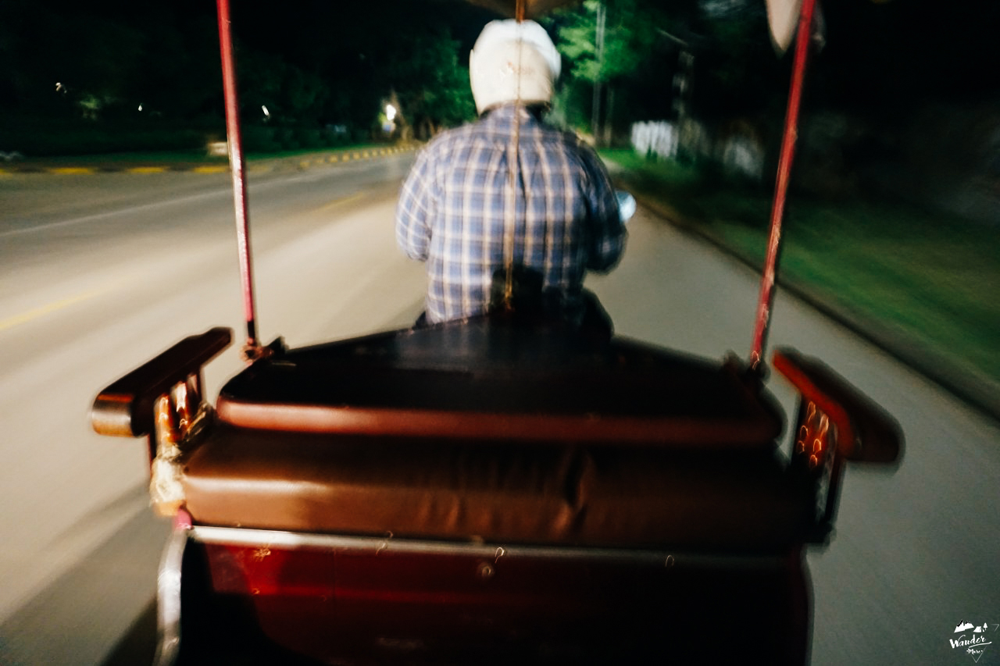

ตี 5 ครึ่ง ฉันเดินทางถึงนครวัด มีกลุ่มนักเดินทางมาถึงก่อนหน้าฉันแล้วมากมาย เราต่างพกไฟฉายมา เพราะในยามนั้นทุกอย่างยังมืดมิด เดินไม่เห็นทาง ฉันเดินลึกเข้าไปเรื่อยๆ อย่างคนรู้ทาง ผ่านโป๊ะลอยน้ำขนาดยักษ์ที่ทำไว้เพื่อให้นักท่องเที่ยวเดินข้ามสระบัว
นักเดินทางทุกคน ต่างจับจองหามุมถ่ายรูปเพื่อให้ได้ภาพออกมาน่าประทับใจที่สุด ส่วนฉัน เดินออกไปอีกฝั่ง เพื่อบันทึกภาพพวกเขาเอาไว้ ทุกคนยอมตื่นเช้า ไม่ได้กินข้าว เดินทางมาที่เดียวกันราวกับนัดกันไว้
เพื่อมาให้สถานที่แห่งนี้ประทับรอยความทรงจำให้พวกเขาเอากลับบ้าน ฉันถือเป็นเพื่อนร่วมอุดมการณ์